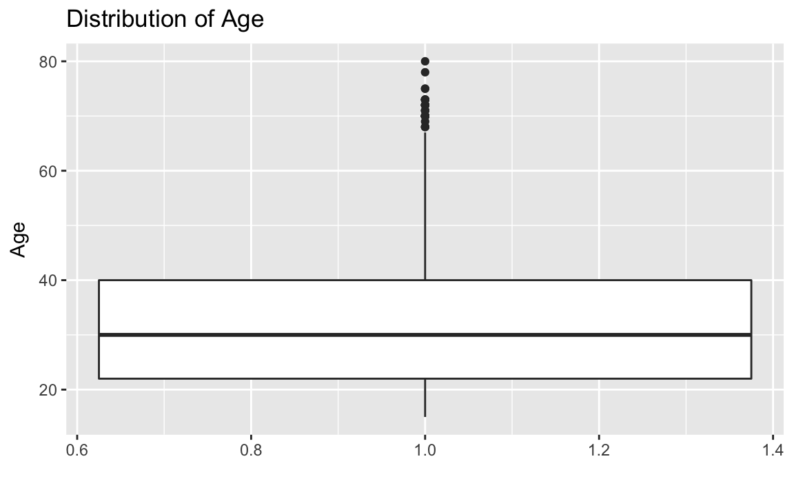
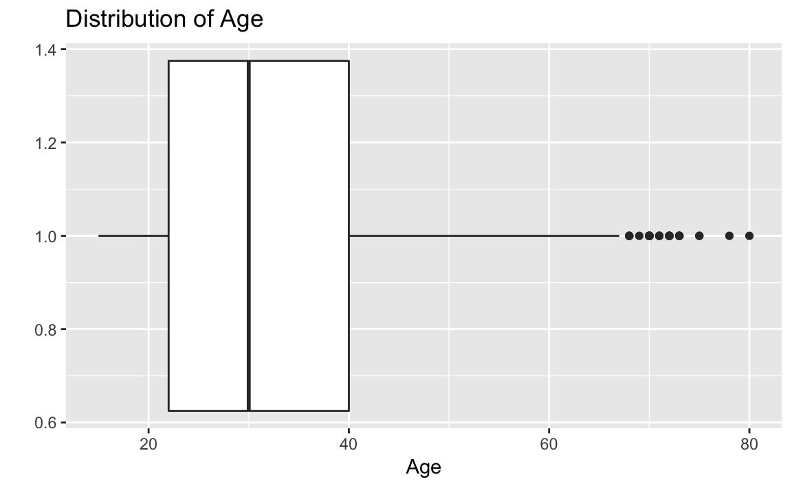
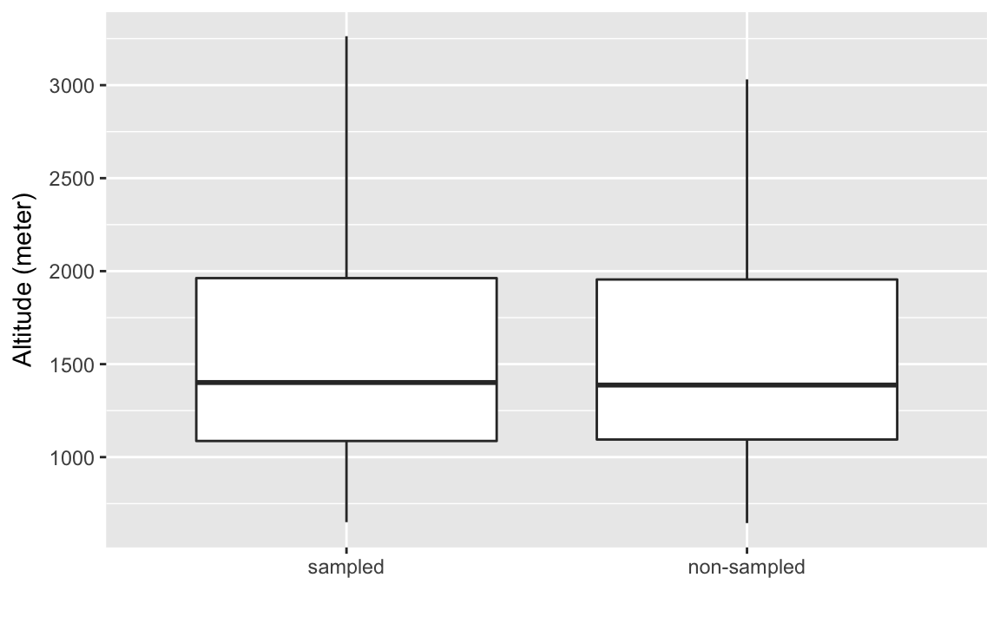
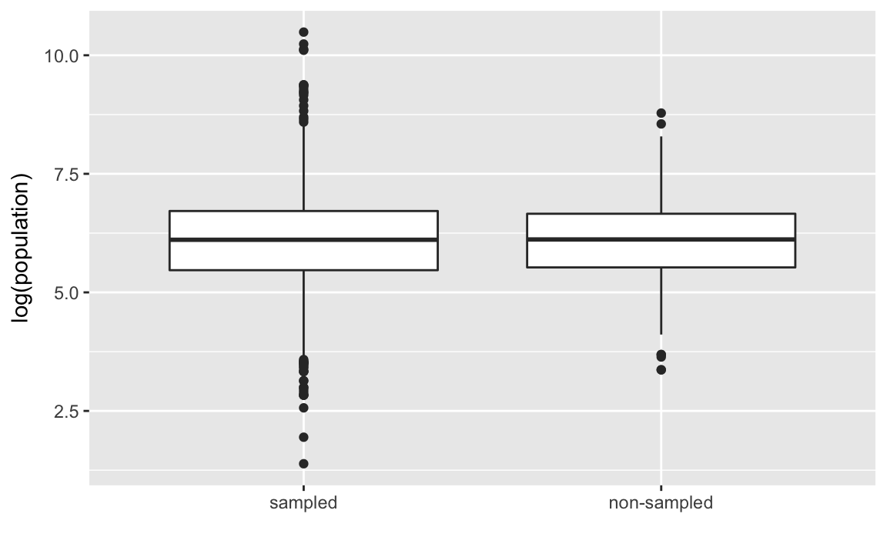
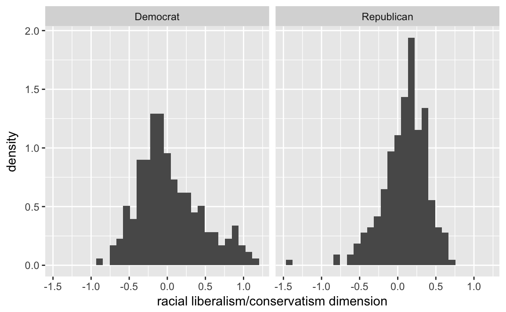

4 Measurement
4.1 Prerequisites
library("tidyverse")
#> Loading tidyverse: ggplot2
#> Loading tidyverse: tibble
#> Loading tidyverse: tidyr
#> Loading tidyverse: readr
#> Loading tidyverse: purrr
#> Loading tidyverse: dplyr
#> Conflicts with tidy packages ----------------------------------------------
#> filter(): dplyr, stats
#> lag(): dplyr, stats
library("forcats")
library("broom")4.2 Measuring Civilian Victimization during Wartime
afghan_url <- "https://raw.githubusercontent.com/kosukeimai/qss/master/MEASUREMENT/afghan.csv"
afghan <- read_csv(afghan_url)Summarize the variables of interest
afghan %>%
select(age, educ.years, employed, income) %>%
summary()
#> age educ.years employed income
#> Min. :15.0 Min. : 0 Min. :0.000 Length:2754
#> 1st Qu.:22.0 1st Qu.: 0 1st Qu.:0.000 Class :character
#> Median :30.0 Median : 1 Median :1.000 Mode :character
#> Mean :32.4 Mean : 4 Mean :0.583
#> 3rd Qu.:40.0 3rd Qu.: 8 3rd Qu.:1.000
#> Max. :80.0 Max. :18 Max. :1.000With income, read_csv never converts strings to factors by default. To get a summary of the different levels, either convert it to a factor (R4DS Ch 15), or use count()
afghan %>%
count(income)
#> # A tibble: 6 × 2
#> income n
#> <chr> <int>
#> 1 10,001-20,000 616
#> 2 2,001-10,000 1420
#> 3 20,001-30,000 93
#> 4 less than 2,000 457
#> 5 over 30,000 14
#> 6 <NA> 154Count the number a proportion of respondents who answer that they were harmed by the ISF (violent.exp.ISAF) and (violent.exp.taliban) respectively,
afghan %>%
group_by(violent.exp.ISAF, violent.exp.taliban) %>%
count() %>%
ungroup() %>%
mutate(prop = n / sum(n))
#> # A tibble: 9 × 4
#> violent.exp.ISAF violent.exp.taliban n prop
#> <int> <int> <int> <dbl>
#> 1 0 0 1330 0.48293
#> 2 0 1 354 0.12854
#> 3 0 NA 22 0.00799
#> 4 1 0 475 0.17248
#> 5 1 1 526 0.19099
#> 6 1 NA 22 0.00799
#> # ... with 3 more rowsWe need to use ungroup() in order to ensure that sum(n) sums over the entire dataset as opposed to only within categories of violent.exp.ISAF.
Unlike prop.table, the code above does not drop missing values. We can drop those values by adding a filter verb and using !is.na() to test for missing values in those variables:
afghan %>%
filter(!is.na(violent.exp.ISAF), !is.na(violent.exp.taliban)) %>%
group_by(violent.exp.ISAF, violent.exp.taliban) %>%
count() %>%
ungroup() %>%
mutate(prop = n / sum(n))
#> # A tibble: 4 × 4
#> violent.exp.ISAF violent.exp.taliban n prop
#> <int> <int> <int> <dbl>
#> 1 0 0 1330 0.495
#> 2 0 1 354 0.132
#> 3 1 0 475 0.177
#> 4 1 1 526 0.1964.2.1 Handling Missing Data in R
We already observed the issues with NA values in calculating the proportion answering the “experienced violence” questions.
You can filter rows with specific variables having missing values using filter as shown above.
Howeer, na.omit works with tibbles just like any other data frame.
na.omit(afghan)
#> # A tibble: 2,554 × 11
#> province district village.id age educ.years employed income
#> <chr> <chr> <int> <int> <int> <int> <chr>
#> 1 Logar Baraki Barak 80 26 10 0 2,001-10,000
#> 2 Logar Baraki Barak 80 49 3 1 2,001-10,000
#> 3 Logar Baraki Barak 80 60 0 1 2,001-10,000
#> 4 Logar Baraki Barak 80 34 14 1 2,001-10,000
#> 5 Logar Baraki Barak 80 21 12 1 2,001-10,000
#> 6 Logar Baraki Barak 80 42 6 1 10,001-20,000
#> # ... with 2,548 more rows, and 4 more variables: violent.exp.ISAF <int>,
#> # violent.exp.taliban <int>, list.group <chr>, list.response <int>4.3 Visualizing the Univariate Distribution
4.3.1 Barplot
library(forcats)
afghan <-
afghan %>%
mutate(violent.exp.ISAF.fct =
fct_explicit_na(fct_recode(factor(violent.exp.ISAF),
Harm = "1", "No Harm" = "0"),
"No response"))
ggplot(afghan, aes(x = violent.exp.ISAF.fct, y = ..prop.., group = 1)) +
geom_bar() +
xlab("Response category") +
ylab("Proportion of respondents") +
ggtitle("Civilian Victimization by the ISAF")
afghan <-
afghan %>%
mutate(violent.exp.taliban.fct =
fct_explicit_na(fct_recode(factor(violent.exp.taliban),
Harm = "1", "No Harm" = "0"),
"No response"))
ggplot(afghan, aes(x = violent.exp.ISAF.fct, y = ..prop.., group = 1)) +
geom_bar() +
xlab("Response category") +
ylab("Proportion of respondents") +
ggtitle("Civilian Victimization by the Taliban")
TODO This plot could improved by plotting the two values simultaneously to be able to better compare them.
- dodged bar plot
- dot-plot
This will require creating a data frame that has the following columns: perpetrator (ISAF, Taliban), response (No Harm, Harm, No response). See the section on Tidy Data and spread gather.
TODO Compare them by region, ?
4.3.2 Boxplot
ggplot(afghan, aes(x = 1, y = age)) +
geom_boxplot() +
labs(y = "Age", x = "") +
ggtitle("Distribution of Age")
ggplot(afghan, aes(y = educ.years, x = province)) +
geom_boxplot() +
labs(x = "Province", y = "Years of education") +
ggtitle("Education by Provice")
Helmand and Uruzgan have much lower levels of education than the other provicnces, and also report higher levels of violence.
afghan %>%
group_by(province) %>%
summarise(educ.years = mean(educ.years, na.rm = TRUE),
violent.exp.taliban =
mean(violent.exp.taliban, na.rm = TRUE),
violent.exp.ISAF =
mean(violent.exp.ISAF, na.rm = TRUE)) %>%
arrange(educ.years)
#> # A tibble: 5 × 4
#> province educ.years violent.exp.taliban violent.exp.ISAF
#> <chr> <dbl> <dbl> <dbl>
#> 1 Uruzgan 1.04 0.4545 0.496
#> 2 Helmand 1.60 0.5042 0.541
#> 3 Khost 5.79 0.2332 0.242
#> 4 Kunar 5.93 0.3030 0.399
#> 5 Logar 6.70 0.0802 0.1444.3.3 Printing and saving graphics
Use the function ggsave() to save ggplot graphics.
Also, RMarkdown files have their own means of creating and saving plots created by code-chunks.
4.4 Survey Sampling
4.4.1 The Role of Randomization
4.5 load village data
afghan_village_url <- "https://raw.githubusercontent.com/kosukeimai/qss/master/MEASUREMENT/afghan-village.csv"
afghan.village <- read_csv(afghan_village_url)
#> Parsed with column specification:
#> cols(
#> altitude = col_double(),
#> population = col_integer(),
#> village.surveyed = col_integer()
#> )Box-plots of altitude
ggplot(afghan.village, aes(x = factor(village.surveyed,
labels = c("sampled", "non-sampled")),
y = altitude)) +
geom_boxplot() +
labs(y = "Altitude (meter)", x = "")
Boxplots log-population values of sampled and non-sampled
ggplot(afghan.village, aes(x = factor(village.surveyed,
labels = c("sampled", "non-sampled")),
y = log(population))) +
geom_boxplot() +
labs(y = "log(population)", x = "")
You can also compare these distributions by plotting their densities:
ggplot(afghan.village, aes(colour = factor(village.surveyed,
labels = c("sampled", "non-sampled")),
x = log(population))) +
geom_density() +
geom_rug() +
labs(x = "log(population)", colour = "")
4.5.1 Non-response and other sources of bias
Calculate the rates of non-response by province to violent.exp.ISAF and violent.exp.taliban:
afghan %>%
group_by(province) %>%
summarise(ISAF = mean(is.na(violent.exp.ISAF)),
taliban = mean(is.na(violent.exp.taliban))) %>%
arrange(-ISAF)
#> # A tibble: 5 × 3
#> province ISAF taliban
#> <chr> <dbl> <dbl>
#> 1 Uruzgan 0.02067 0.06202
#> 2 Helmand 0.01637 0.03041
#> 3 Khost 0.00476 0.00635
#> 4 Kunar 0.00000 0.00000
#> 5 Logar 0.00000 0.00000Calculat the proportion who support the ISAF using the difference in means between the ISAF and control groups:
(mean(filter(afghan, list.group == "ISAF")$list.response) -
mean(filter(afghan, list.group == "control")$list.response))
#> [1] 0.049To calculate the table responses to the list expriment in the control, ISAF, and taliban groups>
afghan %>%
group_by(list.response, list.group) %>%
count() %T>%
glimpse() %>%
spread(list.group, n, fill = 0)
#> Observations: 12
#> Variables: 3
#> $ list.response <int> 0, 0, 1, 1, 1, 2, 2, 2, 3, 3, 3, 4
#> $ list.group <chr> "control", "ISAF", "control", "ISAF", "taliban",...
#> $ n <int> 188, 174, 265, 278, 433, 265, 260, 287, 200, 182...
#> Source: local data frame [5 x 4]
#> Groups: list.response [5]
#>
#> list.response control ISAF taliban
#> * <int> <dbl> <dbl> <dbl>
#> 1 0 188 174 0
#> 2 1 265 278 433
#> 3 2 265 260 287
#> 4 3 200 182 198
#> 5 4 0 24 04.6 Measuring Political Polarization
congress_url <- "https://raw.githubusercontent.com/kosukeimai/qss/master/MEASUREMENT/congress.csv"
congress <- read_csv(congress_url)
#> Parsed with column specification:
#> cols(
#> congress = col_integer(),
#> district = col_integer(),
#> state = col_character(),
#> party = col_character(),
#> name = col_character(),
#> dwnom1 = col_double(),
#> dwnom2 = col_double()
#> )glimpse(congress)
#> Observations: 14,552
#> Variables: 7
#> $ congress <int> 80, 80, 80, 80, 80, 80, 80, 80, 80, 80, 80, 80, 80, 8...
#> $ district <int> 0, 1, 2, 3, 4, 5, 6, 7, 8, 9, 98, 98, 1, 2, 3, 4, 5, ...
#> $ state <chr> "USA", "ALABAMA", "ALABAMA", "ALABAMA", "ALABAMA", "A...
#> $ party <chr> "Democrat", "Democrat", "Democrat", "Democrat", "Demo...
#> $ name <chr> "TRUMAN", "BOYKIN F.", "GRANT G.", "ANDREWS G.", "...
#> $ dwnom1 <dbl> -0.276, -0.026, -0.042, -0.008, -0.082, -0.170, -0.12...
#> $ dwnom2 <dbl> 0.016, 0.796, 0.999, 1.005, 1.066, 0.870, 0.990, 0.89...To create the scatterplot in 3.6, we can
congress %>%
filter(congress %in% c(80, 112),
party %in% c("Democrat", "Republican")) %>%
ggplot(aes(x = dwnom1, y = dwnom2, colour = party)) +
geom_point() +
facet_wrap(~ congress) +
coord_fixed() +
scale_y_continuous("racial liberalism/conservatism",
limits = c(-1.5, 1.5)) +
scale_x_continuous("economic liberalism/conservatism",
limits = c(-1.5, 1.5))
congress %>%
ggplot(aes(x = dwnom1, y = dwnom2, colour = party)) +
geom_point() +
facet_wrap(~ congress) +
coord_fixed() +
scale_y_continuous("racial liberalism/conservatism",
limits = c(-1.5, 1.5)) +
scale_x_continuous("economic liberalism/conservatism",
limits = c(-1.5, 1.5))
#> Warning: Removed 2 rows containing missing values (geom_point).
congress %>%
group_by(congress, party) %>%
summarise(dwnom1 = mean(dwnom1)) %>%
filter(party %in% c("Democrat", "Republican")) %>%
ggplot(aes(x = congress, y = dwnom1,
colour = fct_reorder2(party, congress, dwnom1))) +
geom_line() +
labs(y = "DW-NOMINATE score (1st Dimension)", x = "Congress",
colour = "Party")
4.6.1 Correlation
Let’s plot the Gini coefficient
usgini_url <- "https://raw.githubusercontent.com/kosukeimai/qss/master/MEASUREMENT/USGini.csv"
USGini <- read_csv(usgini_url)
#> Warning: Missing column names filled in: 'X1' [1]
#> Parsed with column specification:
#> cols(
#> X1 = col_integer(),
#> year = col_integer(),
#> gini = col_double()
#> )ggplot(USGini, aes(x = year, y = gini)) +
geom_point() +
labs(x = "Year", y = "Gini coefficient") +
ggtitle("Income Inequality")
To calculate a measure of party polarization take the code used in the plot of Republican and Democratic party median ideal points and adapt it to calculate the difference in the party medians:
party_polarization <-
congress %>%
group_by(congress, party) %>%
summarise(dwnom1 = mean(dwnom1)) %>%
filter(party %in% c("Democrat", "Republican")) %>%
spread(party, dwnom1) %>%
mutate(polarization = Republican - Democrat)
party_polarization
#> Source: local data frame [33 x 4]
#> Groups: congress [33]
#>
#> congress Democrat Republican polarization
#> <int> <dbl> <dbl> <dbl>
#> 1 80 -0.146 0.276 0.421
#> 2 81 -0.195 0.264 0.459
#> 3 82 -0.180 0.265 0.445
#> 4 83 -0.181 0.261 0.442
#> 5 84 -0.209 0.261 0.471
#> 6 85 -0.214 0.250 0.464
#> # ... with 27 more rowsggplot(party_polarization, aes(x = congress, y = polarization)) +
geom_point() +
ggtitle("Political Polarization") +
labs(x = "Year", y = "Republican median − Democratic median")
4.6.2 Quantile-Quantile Plot
To create histogram plots similar
congress %>%
filter(congress == 112, party %in% c("Republican", "Democrat")) %>%
ggplot(aes(x = dwnom2, y = ..density..)) +
geom_histogram() +
facet_grid(. ~ party) +
labs(x = "racial liberalism/conservatism dimension")
#> `stat_bin()` using `bins = 30`. Pick better value with `binwidth`.
ggplot2 includes a stat_qq which can be used to create qq-plots but it is more suited to comparing a sample distribution with a theoretical distibution, usually the normal one. However, we can calculate one by hand, which may give more insight into exactly what the qq-plot is doing.
party_qtiles <- tibble(
probs = seq(0, 1, by = 0.01),
Democrat = quantile(filter(congress, congress == 112, party == "Democrat")$dwnom2,
probs = probs),
Republican = quantile(filter(congress, congress == 112, party == "Republican")$dwnom2,
probs = probs)
)
party_qtiles
#> # A tibble: 101 × 3
#> probs Democrat Republican
#> <dbl> <dbl> <dbl>
#> 1 0.00 -0.925 -1.381
#> 2 0.01 -0.672 -0.720
#> 3 0.02 -0.619 -0.566
#> 4 0.03 -0.593 -0.526
#> 5 0.04 -0.567 -0.468
#> 6 0.05 -0.560 -0.436
#> # ... with 95 more rowsThe plot looks different than the one in the text since the x- and y-scales are in the original values instead of z-scores (see the next section).
party_qtiles %>%
ggplot(aes(x = Democrat, y = Republican)) +
geom_point() +
geom_abline() +
coord_fixed()
4.7 Clustering
4.7.1 Matrices
While matrices are great for numerical computations, such as when you are implementing algorithms, generally keeping data in data frames is more convenient for data wrangling.
4.7.2 Lists
See R4DS Chapter 20: Vectors, Chapter 21: Iteration and the purrr package for more powerful methods of computing on lists.
4.7.3 k-means algorithms
TODO A good visualization of the k-means algorithm and a simple, naive implementation in R.
Calculate the clusters by the 80th and 112th congresses,
k80two.out <-
kmeans(select(filter(congress, congress == 80),
dwnom1, dwnom2),
centers = 2, nstart = 5)Add the cluster ids to datasets
congress80 <-
congress %>%
filter(congress == 80) %>%
mutate(cluster2 = factor(k80two.out$cluster))We will also create a data sets with the cluster centroids. These are in the centers element of the cluster object.
k80two.out$centers
#> dwnom1 dwnom2
#> 1 -0.0484 0.783
#> 2 0.1468 -0.339To make it easier to use with ggplot, we need to convert this to a data frame. The tidy function from the broom package:
k80two.clusters <- tidy(k80two.out)
k80two.clusters
#> x1 x2 size withinss cluster
#> 1 -0.0484 0.783 135 10.9 1
#> 2 0.1468 -0.339 311 54.9 2Plot the ideal points and clusters
ggplot() +
geom_point(data = congress80,
aes(x = dwnom1, y = dwnom2, colour = cluster2)) +
geom_point(data = k80two.clusters, mapping = aes(x = x1, y = x2))
We can also plot,
congress80 %>%
group_by(party, cluster2) %>%
count()
#> Source: local data frame [5 x 3]
#> Groups: party [?]
#>
#> party cluster2 n
#> <chr> <fctr> <int>
#> 1 Democrat 1 132
#> 2 Democrat 2 62
#> 3 Other 2 2
#> 4 Republican 1 3
#> 5 Republican 2 247And now we can repeat these steps for the 112th congress:
k112two.out <-
kmeans(select(filter(congress, congress == 112),
dwnom1, dwnom2),
centers = 2, nstart = 5)
congress112 <-
filter(congress, congress == 112) %>%
mutate(cluster2 = factor(k112two.out$cluster))
k112two.clusters <- tidy(k112two.out)
ggplot() +
geom_point(data = congress112,
mapping = aes(x = dwnom1, y = dwnom2, colour = cluster2)) +
geom_point(data = k112two.clusters,
mapping = aes(x = x1, y = x2))
congress112 %>%
group_by(party, cluster2) %>%
count()
#> Source: local data frame [3 x 3]
#> Groups: party [?]
#>
#> party cluster2 n
#> <chr> <fctr> <int>
#> 1 Democrat 2 200
#> 2 Republican 1 242
#> 3 Republican 2 1Now repeat the same with four clusters on the 80th congress:
k80four.out <-
kmeans(select(filter(congress, congress == 80),
dwnom1, dwnom2),
centers = 4, nstart = 5)
congress80 <-
filter(congress, congress == 80) %>%
mutate(cluster2 = factor(k80four.out$cluster))
k80four.clusters <- tidy(k80four.out)
ggplot() +
geom_point(data = congress80,
mapping = aes(x = dwnom1, y = dwnom2, colour = cluster2)) +
geom_point(data = k80four.clusters,
mapping = aes(x = x1, y = x2), size = 3)
and on the 112th congress:
k112four.out <-
kmeans(select(filter(congress, congress == 112),
dwnom1, dwnom2),
centers = 4, nstart = 5)
congress112 <-
filter(congress, congress == 112) %>%
mutate(cluster2 = factor(k112four.out$cluster))
k112four.clusters <- tidy(k112four.out)
ggplot() +
geom_point(data = congress112,
mapping = aes(x = dwnom1, y = dwnom2, colour = cluster2)) +
geom_point(data = k112four.clusters,
mapping = aes(x = x1, y = x2), size = 3)